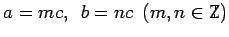
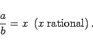
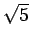

Zwei Zahlen a und b heißen kommensurabel, d.h. mit gleichem Maß meßbar, wenn sie ganzzahlige Vielfache einer dritten Zahl c sind. Aus  folgt dann
|  | (1.10) |
Im entgegengesetzten Falle sind a und b inkommensurabel.
| Beispiel A |
|
Die Länge einer Diagonale und die Seitenlänge eines Quadrates sind inkommensurabel, weil sie die irrationale Zahl |
| Beispiel B |
|
Strecken, die gemäß dem Goldenen Schnitt bemessen werden, sind inkommensurabel, weil dieser die irrationale Zahl  enthält. Somit sind auch Diagonale und Seitenlänge des regelmäßigen Fünfecks inkommensurabel. Man geht heute davon aus, daß HIPPASOS von Metapontum (450 v. u. Z.) am Pentagramm, das aus den Diagonalen des regelmäßigen Fünfecks gebildet wird, die irrationalen Zahlen entdeckt hat. |